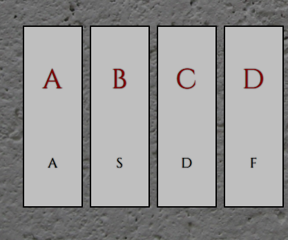
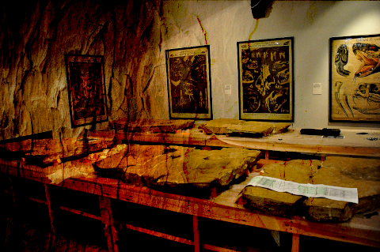

Here are where all my cool projects are going to go
If you would like an extremely stripped down list of projects here is a link to a markdown file instead - no judgement

A simple javascript piano that listens for a specific melody

Using javascript to modify an image's CSS variables